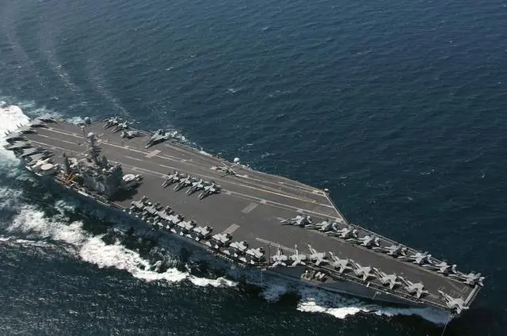
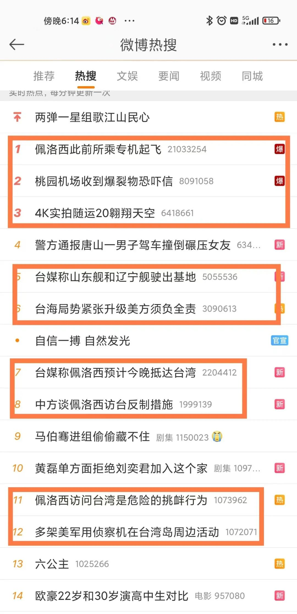

该来总得来
原创 V姐万事屋 V姐来了 2022-08-02 20:56 发表于上海 原文链接(长) 原文链接(短)Hi, 我是V姐。
今天市场大跌，中位数跌了4.3%。该来总得来，你们看图里这美国里根号航母，它仿佛缓缓开往上交所。

以前看国际大事看个热闹，自从炒了股，每次看热闹都要收费了。
如果老太婆今晚不来，明天就大涨。
如果老太婆今晚来了，我们有动作，但没打，明天市场还是会涨。
如果老太婆今晚来了，我们打了，真见证历史，市场短期震荡，但不会改变本来的趋势。
**所以，今天你加仓了吗？**
今天的微博热搜已经被这事霸榜，从各大海域军演，福建航班、高铁取消，到航母战机动向，以及多方发言人的交锋，说360°战争动员不夸张。

目前综合台湾和外网消息看，老太婆窜访的可能性很大。
看到不少人讲高层要冷静，不要被民意绑架。
这话讲反了，是先有高层的决策，然后才有汹涌的民意。否则跟16年一样，都快开打了，也不过在新闻联播上只有一条短短的快讯，讲军演而已。
重大决策一定是基于实力博弈的，算账是成熟政治家的基本技能。
老太婆来了，打，我们有面子，短期会有实际损失，长远利益有保障。
老太婆来了，不打，虽然会有动作，我们基本没面子，但里子还是有的。比如伴飞进入台湾，后续实际取得台湾的制空权，暂时没有太大实际损失，随着时间发展，长远利益一样有保障。
当然，里子经常还包括威慑力和做事的成本。
人家知道你敢出手，有能力出手，你推进很多事情就容易不少。否则小弟就难带，本来一个电话解决的事情，需要马上给实际的好处才行。
所以综合账，你我都没本事算清楚。
个人角度，肯定不期盼战争，战争背后是流血牺牲，是千辛万苦的保民生保就业付诸东流。
但是历史的车轮滚滚而过，对普通人来说，是见证也是碾压。
当下普通人能做的最优选，就是相信国家，以及，做好自己的事。
跟人因为政见吵架是最不值得的。最近网络一个时政大V，300多万粉，直播带货金额600元 沉迷时政和经济实力成反比，好像还是有道理的。
咱们该干嘛干嘛，好好工作，好好生活，锻炼身体，爱护家人。
要在不确定的时代里，尽量抓住一点确定感，在失序的世界里，维持住生活的秩序感，是普通人面对大变局最好的抓手。
沉迷时政和经济实力成反比，好像还是有道理的。
咱们该干嘛干嘛，好好工作，好好生活，锻炼身体，爱护家人。
要在不确定的时代里，尽量抓住一点确定感，在失序的世界里，维持住生活的秩序感，是普通人面对大变局最好的抓手。
沉迷时政和经济实力成反比，好像还是有道理的。
咱们该干嘛干嘛，好好工作，好好生活，锻炼身体，爱护家人。
要在不确定的时代里，尽量抓住一点确定感，在失序的世界里，维持住生活的秩序感，是普通人面对大变局最好的抓手。